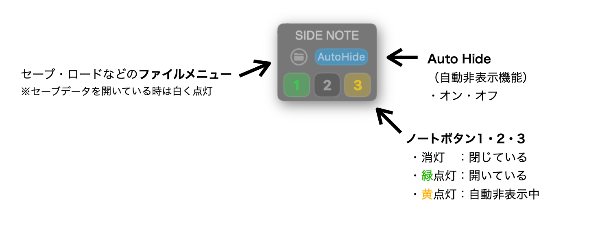
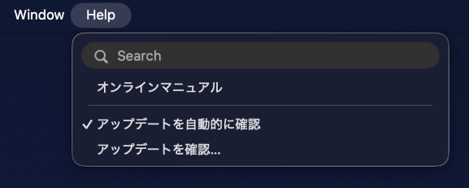

Web Manual
Side Note
マニュアル
Side Noteは、テキスト、PDF、画像を作業画面のそばに置いておくためのmacOS用ノートアプリです。 3枚のノートを切り替えながら、必要な情報を作業中にすぐ確認できます。
Control
Side Noteコントロール
Side Noteの小さなコントロールから、ノートの表示、AutoHide、ファイル操作を行います。 ノートボタンの色で、現在の表示状態を確認できます。

Shortcuts
ショートカット
ノートの表示切り替えや、テキスト / PDFモードでよく使う操作はショートカットから実行できます。
ノートの表示・非表示
次の3つはグローバルショートカットです。
ほかのアプリを操作しているときでも、Side Noteのノートを表示・非表示できます。
| ⌥ + F1 | ノート1の表示 / 非表示 |
|---|---|
| ⌥ + F2 | ノート2の表示 / 非表示 |
| ⌥ + F3 | ノート3の表示 / 非表示 |
ノート操作のショートカット
背景の不透明度は、すべてのノートに共通して適用されます。
PDFのズームとテキストの文字サイズは、選択しているノートにのみ適用されます。
| ⌥ + ⌘ + ] | ノート背景の不透明度を上げる |
|---|---|
| ⌥ + ⌘ + [ | ノート背景の不透明度を下げる |
| ⌥ + ⌘ + 0 | ノート背景の不透明度をデフォルトに戻す |
| ⌘ + / ⌘ - | PDFのズーム、またはテキストの文字サイズを変更 |
AutoHide
AutoHideを使う
AutoHideをONにすると、ほかのアプリを操作しているときに、Side Noteのノート上へマウスカーソルを移動してすぐに停止させると、ノートがゆっくりフェードアウトします。 Side Note自体を操作しているときは動作しません。 作業中に一時的にノートを隠したい時に使います。
| AutoHide ON | ほかのアプリを操作中に、ノート上でマウスカーソルを停止させるとノートを自動的に隠す |
|---|---|
| ⌘ + TabでSide Noteを選択 | AutoHideで非表示になっているノートを、すべて表示状態に戻す |
AutoHideの一時キャンセル
AutoHideをONにしたまま、テキストやPDFをスクロールするなどノートを操作したいときは、その回のAutoHideだけを一時的にキャンセルできます。
| スクロール | AutoHideをキャンセルし、テキストやPDFをそのままスクロールする |
|---|---|
| マウスカーソルを動かし続ける | ノート上へ移動したあと、すぐに停止させず動かし続けるとAutoHideをキャンセルする |
| ⌘キー | ⌘キーを押すとAutoHideをキャンセルする |
一度AutoHideがキャンセルされると、そのままノート上でカーソルを停止させても再び動作しません。マウスカーソルを一度ノートの外へ移動し、再びノート上へ戻してください。
「マウス不停止でキャンセル」と「⌘キーでキャンセル」は、設定メニューから個別にON / OFFを切り替えられます。どちらもデフォルトではONです。
Save
保存と読み込み
Side Noteは、起動時にドキュメントを作る必要がない設計です。 一時的なメモとして使う場合は、そのまま使い始められます。 残しておきたい状態は、ファイルメニューからSaveできます。
Saveではノートの内容だけでなく、ノートの位置、表示していたPDFのページ、 ノートの表示・非表示など、その時のSide Noteの状態をまとめて保存します。 Loadすると、保存した時の状態が復元されます。
| Save | ノートの内容と、その時の表示状態やノート位置などをまとめて保存 |
|---|---|
| Load | 保存した時のノート内容、表示状態、位置、PDFの表示ページなどを復元 |
| Clear | 各ノート右上の小さな「×」ボタンで内容をクリア |
Quick Look
Side Noteで保存したパッケージは、FinderのQuick Look（スペースキー）で内容を確認できます。
Side Noteを起動しなくても、保存されているノートの内容をすばやく確認できます。
また、Side NoteのQuick Look機能はZIPファイルの内容表示にも対応しています。
Detailed Manual
保存データについて
Side Noteの保存データはパッケージ形式です。 テキスト、貼り付けた画像、取り込んだPDFなどは保存時にパッケージ内へ格納されるため、 元の画像やPDFを移動・削除しても、保存したSide Noteデータから読み込めます。
パッケージはFinderで右クリックして「パッケージの内容を表示」を選ぶと、中に保存されているファイルを確認できます。
Export
エクスポート
ノートをPDFまたはスタンドアロンHTMLビューアとして書き出せます。
メニューバーのファイルメニューから行います。
選択中のノートをPDFとして書き出す
- 現在選択しているノートをPDFとして書き出します。
- テキストノートは、貼り付けた画像を含めた内容全体を、ひと続きのPDFとして書き出します。
- PDFノートの場合は、取り込まれているPDFをそのまま書き出します。
スタンドアロンHTMLビューアを書き出す
- ノート1〜3の内容をひとつのHTMLファイルとして書き出せます。
- 書き出したHTMLは、Side Noteがなくてもブラウザで閲覧用として開くことができます。
- ブラウザの印刷機能を使って、選択したノートを印刷したりPDFとして保存することもできます。
RTC Integration
RTC連携
対応バージョンのRelative Time Counter（RTC）と組み合わせることで、テキストノートからRTCを直接ロケートできます。
テキストからRTCへロケート
テキスト内の時間表記に⌘（Command）キーを押しながらカーソルを重ねると、緑色のリンクに変わります。
リンクをクリックすると、その時間をRTCへ送信してロケートします。
対応する主な時間表記
- 1:23 / 01:23
- 1:23:45 / 01:23:45:12
- 15秒 / 1分 / 1分23秒
- 15s / 42sec
- 1m23s / 1min 23sec
全角数字・全角コロンのほか、セミコロンやピリオドによる区切りにも対応しています。
実際のロケート解釈（REL／ABS、フレームの扱い）は、RTC側の現在の設定に従います。
RTCの時刻をノートに挿入
ノートのタイトルバーにある時計アイコンをクリックすると、RTCのカウンターに現在表示されている時刻をテキストとしてノートに挿入できます。
たとえばRTCに2:25と表示されている場合、ノートのカーソル位置に2:25が挿入されます。
ミックスや編集を確認しながら、気になった箇所の時刻をノートへ記録するときに便利です。
書き込みスペースを追加
歌詞カードや進行表など、既存のテキストに書き込み用のスペースを追加できます。
テキストを選択してノートのタイトルバーにある表アイコンをクリックすると、選択したテキストが表に変換され、左側に新しい列が追加されます。
追加した列には、メモやセクション名などを自由に書き込めます。
RTC連携と組み合わせれば、時計アイコンからRTCの時刻を挿入して、歌詞や進行に沿った時間情報を記録していくこともできます。
表の右クリックメニュー
- 左側にメモ列を追加
- カーソル位置の列を削除
- 罫線の表示／非表示を切り替え
Notes
補足
Side Noteは、基本的には小さなビューアとして使うことを想定しています。 PDFやテキストの編集機能は最小限です。 テキスト編集やPDF表示はApple標準の仕組みを利用しているため、右クリックから一部の標準機能を使える場合があります。
| 画像貼り付け | 貼り付けた画像はドラッグで拡大縮小できます。ダブルクリックで拡大プレビューできます。 |
|---|---|
| Shiftを押しながら起動 | ノート1がテキストモードで、すぐに書ける状態で起動します。 |
Updates
アップデートと更新履歴
Side NoteメニューまたはHelpメニューの「アップデートを確認…」から、最新版の有無を確認できます。

「アップデートを自動的に確認」がオンの場合、更新があるときに通知します。
Side Noteの更新履歴を見る